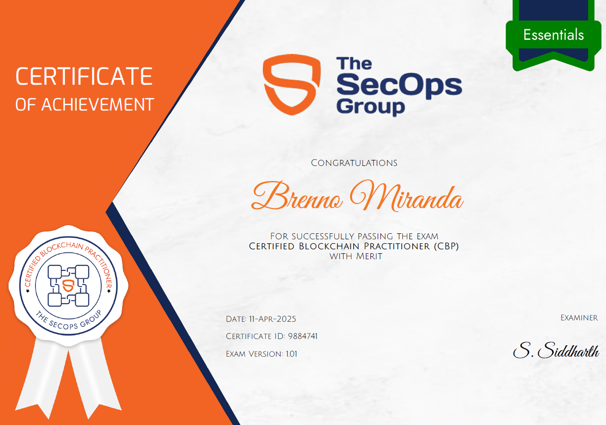

A CBP, Certified Blockchain Practitioner, ofertada pela The SecOps Group, é uma certificação voltada aos fundamentos da tecnologia blockchain, além de suas implementações, especificações técnicas e seus casos de uso, dando ênfase na Ethereum.
No dia 11/04/2025, realizei a prova, sendo aprovado com méritos.

Temas cobrados
Perante o escopo da certificação, os seguintes temas são abordados:
- Understanding the Basics
- Nodes
- Mining
- Consensus Algorithm
- Transactions
- Forks
- Smart Contracts
- Decentralized Apps
- IFPS Fundamentals
- Overview of Ethereum
- Ethereum
- EVM (Ethereum Virtual Machine)
- Ethereum Tokens
- Test Networks of Ethereum
- Proof of Stakes
- Proof of Work
- Non-Fungible Token (NFT)
- ERC-721 Standard
- ERC-1155 Tokens
- Metaverse Basics
- Ethereum 2.0 (The Merge)
- Scalability
- Energy Consumption
- Beacon Chain
- Plasma
- Ethereum Tokens (Fungible)
- Ethereum Request for Comments (ERC)
- Ethereum Improvement Proposals (EIPs)
- ERC-20 Standard
- ERC – 884 Standard
- DeFi (Decentralised Finance)
- DAO (Decentralized Automation Organization)
Sobre o exame
Trata-se de uma prova de múltipla-escolha de 60 questões, onde é disponbilizado 60 minutos para sua conclusão. Caso o candidato acerte mais de 60% da prova, o mesmo será aprovado, assim se certificando. Caso o mesmo acerte mais de 80% da prova, sua certificação terá o acrescimo de "with merit", evidenciando assim a alta porcentagem de acerto. A prova aborda todos os temas citados em seu escopo, tendo questões que variam entre conceitos relacionados a blockchain e ethereum, especificações técnicas e significado de palavras-chaves desse contexto.Durante a prova, é requerido acesso a camera e microfone, para validação de ambiente físico e evitar ações que ferem a conduta de ética do exame.
Referências de estudo para o exame
- Unofficial Guide to Certified Blockchain Practitioner | https://medium.com/novai-blockchain-101/guide
- Ethereum.org | https://ethereum.org/en/learn/